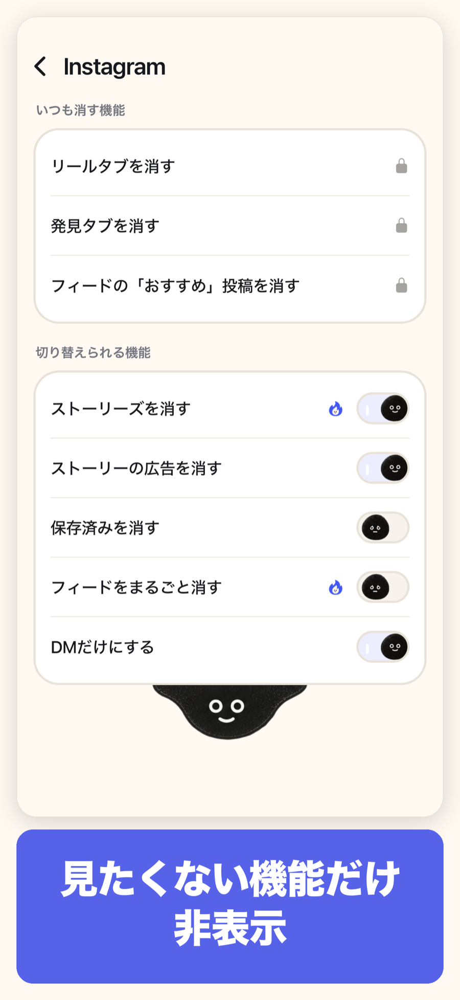
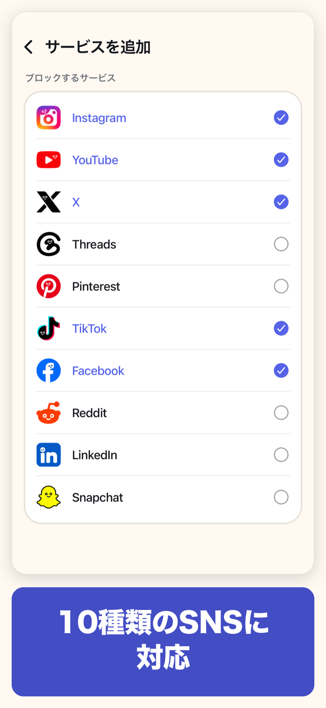
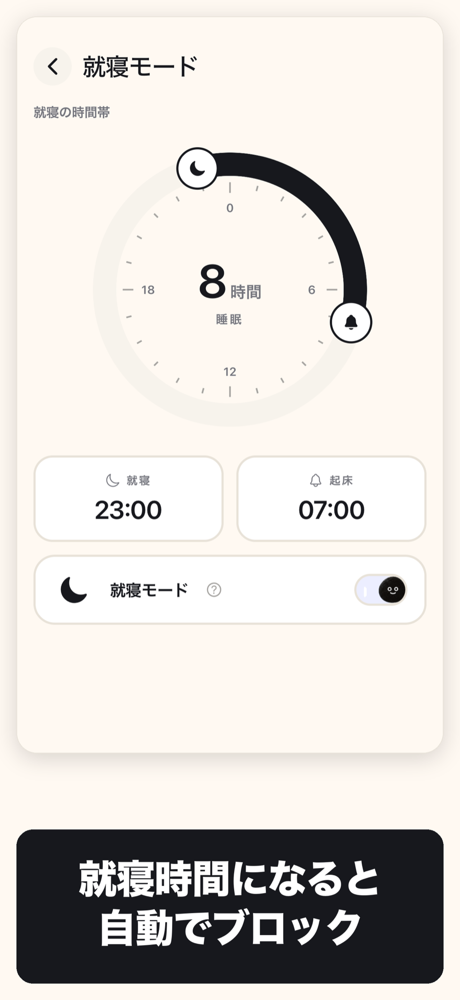
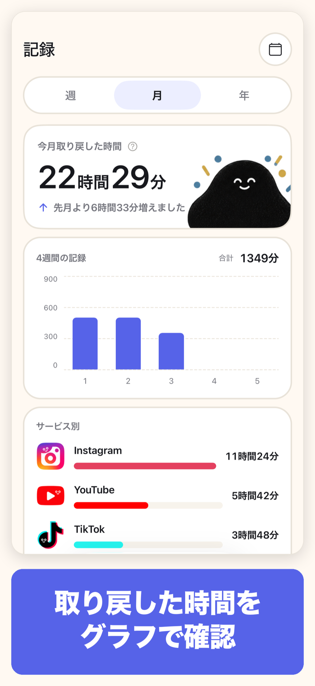

無限スクロールを防ぐための基本機能に、料金はかかりません。
SNSのIDやパスワードを、minuloが取得・保存することはありません。
minuloが変更するのは、minuloの中で開いたページだけです。Safariなどで開いたWebサイトを一括で制限することはありません。

Instagramなど、サービスごとに非表示にする項目を設定できます。

いつものSNSアプリを開く代わりに、minuloからSNSを利用する習慣をつくれます。

曜日や時間帯を指定して、選んだSNSを自動でブロックできます。

SNSを開くのを思いとどまれた回数や、取り戻した時間を確認できます。